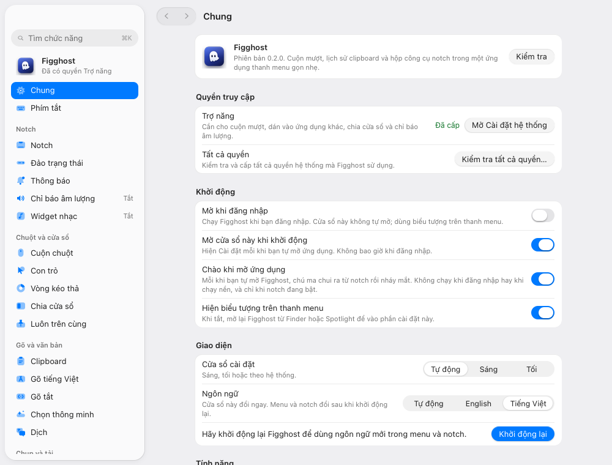
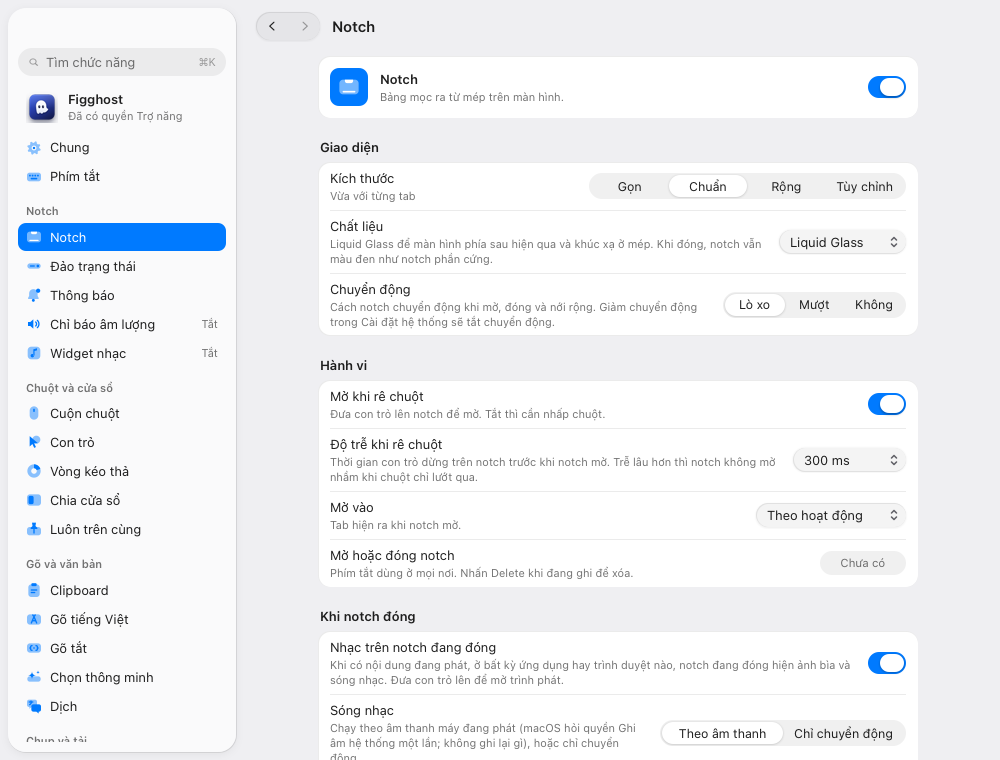

Figghost: vẽ lại cửa sổ cài đặt theo macOS
Bản vẽ đủ mọi trang của cửa sổ cài đặt, để duyệt trước khi sửa app. Nội dung từng hàng (tên, mô tả, lựa chọn, giá trị mẫu) lấy từ chính trang cài đặt của bản 2.1.17 chạy với dữ liệu mẫu, tiếng Việt, ngày 28/10/2026; chỉ cách sắp xếp và hình thức là mới. Bấm thử mọi thứ: sidebar, tìm kiếm theo nội dung, các tab trong trang Notch, nút Nâng cao…, công tắc, phím tắt.
1. Vì sao bản hiện tại bị chê
- Loạn màu. Mỗi trang có một cặp màu riêng: 38 cặp trong
PAGE_LOOKcủaapp.js, từ cam, hồng, tím đến xanh ngọc. Biểu tượng sidebar, hero và quầng sáng đều lấy màu đó, nên chuyển trang là đổi cả bảng màu. - Vẻ "AI". Hero là hai radial-gradient chồng lên một linear-gradient, bán kính 30 px, đổ bóng cùng màu; nền cửa sổ là ba vệt aurora xanh tím, tối thì thêm sao; mọi thẻ có viền sáng. Các danh mục về "AI slop" liệt kê đúng những thứ này: gradient xanh tím không mang nghĩa, thẻ kính mờ chồng trên nền nhiều màu, quầng phát sáng.
- Kính ở sai lớp. Thẻ nội dung là kính mờ. HIG Materials nói Liquid Glass dành cho lớp điều hướng và điều khiển, không dùng ở lớp nội dung.
- Năm bán kính không đồng tâm (18, 22, 30, 14 đến 16, 10), và một màu mang hai nghĩa: công tắc trong hero màu xanh lá, mọi công tắc khác theo màu nhấn; chấm xanh lá có ở gần như mọi mục sidebar nên không còn báo được gì.
- Trang trí lấn công cụ. Chữ viết tay, con ma nói trong bong bóng, trời đổi theo giờ, thấu kính lò xo chạy theo con trỏ.
- Khó dùng. 38 trang nằm phẳng trong sidebar. Tab của notch được bật tắt ở hai nơi khác nhau (danh sách "Các tab" trong trang Notch và 16 trang tính năng). Trang Notch có 11 nhóm, gồm cả chỉ báo âm lượng, lời bài hát và ẩn biểu tượng thanh menu. Trang Clipboard có 10 nhóm. Mô tả dài đến năm dòng nằm giữa các công tắc.


2. Nguyên tắc
- Kính chỉ ở chỗ macOS đặt kính: sidebar nổi, thanh công cụ, sheet. Nội dung là nhóm đặc như form của System Settings.
- Một màu nhấn duy nhất, là màu nhấn người dùng chọn trong System Settings. Xanh lá chỉ cho "đã cấp", cam cho "cần cấp", đỏ cho hành động xóa. Bấm các chấm màu ở trên để thấy cả cửa sổ đổi theo.
- Một thang bán kính đồng tâm: cửa sổ 26, sidebar 18, nhóm 12, ô biểu tượng 9, mục sidebar 8, điều khiển hình viên. Chỉ dùng SF Pro.
- Mọi trang mở bằng cùng một nhóm đầu: ô biểu tượng, tên, một câu mô tả, công tắc của tính năng ở bên phải.
- Mỗi hàng: tên, mô tả gập còn hai dòng (bấm "Thêm" để đọc hết), một điều khiển bên phải. Hàng chỉ có chữ giải thích thành chữ nhỏ dưới nhóm.
- Mục hiếm dùng nằm sau nút "Nâng cao…" ở cuối trang, mở thành sheet.
- Không hiệu ứng trang trí. Chỉ công tắc có chuyển động, và tắt hẳn khi bật Giảm chuyển động. Con ma giữ ở biểu tượng app, màn chào và notch.
3. Sắp xếp lại
| Hiện tại | Bản mới |
|---|---|
| 38 mục trong sidebar | 24 mục trong sáu nhóm; trạng thái quyền ở khối Figghost trên cùng |
| 16 trang tab trong sidebar, cộng danh sách "Các tab" trong trang Notch | Một danh sách Tab trong trang Notch (20 tab): công tắc, kéo để sắp xếp, bấm để vào trang của tab |
| Âm lượng, Kiểu chỉ báo trong trang Notch | Trang riêng "Chỉ báo âm lượng" |
| Biểu tượng trên thanh menu trong trang Notch | Trang riêng "Thanh menu" |
| Khay tệp, Lời bài hát trong trang Notch | Trang của tab Khay và tab Media |
| Bốn thẻ kích thước và bốn thanh trượt | Một nút chọn; thanh trượt chỉ hiện khi chọn Tùy chỉnh |
| Màn hình, Đổ bóng, Phản hồi xúc giác của Notch | Nâng cao |
| Bàn phím trong Clipboard | Bỏ, đã có ở Phím tắt. Trợ lý AI và Linh vật vào Nâng cao |
| Tài khoản, Token (Tác tử AI); Phím tắt (Trình chiếu) | Nâng cao |
| Có gì ở đâu, Vì sao có Figghost, 13 phiên bản (Giới thiệu) | Nút "Các phiên bản" mở sheet |
| Lưới ô tròn màu ở trang Chung | Danh sách tính năng có công tắc |
| Bảng 22 ô phím của Chia cửa sổ | Bảng ba nhóm, mỗi hàng có hình vùng nhỏ và phím tắt |
| Đồ thị cuộn | Bỏ; giữ ô thử cuộn |
| Mole: nhiều bảng màu và danh sách dài | Kiểu trang Dung lượng của macOS: mức dùng, thanh dung lượng một màu, mỗi loại một trang con. Số trong bản vẽ là số mẫu |
4. Thông số
| Thành phần | Hiện tại | Bản mới |
|---|---|---|
| Màu | 38 cặp màu theo trang, cộng xanh lá ở hero | Màu nhấn hệ thống, cộng ba màu trạng thái |
| Nền cửa sổ | Ba vệt aurora, sao khi tối, trời theo giờ | Màu đặc: #efeff2 sáng, #1c1c1e tối |
| Thẻ | Kính mờ, viền sáng, bán kính 22 | Nhóm đặc, viền 0,5 px, bán kính 12 |
| Đầu trang | Hero gradient bán kính 30, có quầng | Nhóm đầu: ô 38 px, tên, một câu, công tắc |
| Sidebar | Ô gradient nhiều màu, chấm xanh | Glyph đơn sắc màu nhấn, chữ "Tắt" khi tính năng tắt |
| Chữ | SF Pro, Inter và Patrick Hand | SF Pro |
| Hàng | Cao 50, lề 18, mô tả không giới hạn | Cao 38, lề 12, mô tả tối đa hai dòng |
| Điều khiển | Viên 28, công tắc 44 x 24 | Viên 24, công tắc 38 x 22 |
| Chuyển động | Thấu kính lò xo, trang nảy lên, ma chớp mắt | Chỉ công tắc |
5. Sau khi duyệt
crates/app-ui/web/app.css: bỏ khối "Liquid Glass, as macOS 26 draws it" và khối "Ghost world", thay bằng token và luật ở khối<style>của trang này.app.js: bỏPAGE_LOOKvà ô gradient (giữGLYPHS);pageHerothành nhóm đầu trang;featureGridthành danh sách;CATEGORIEStheo sidebar mới; tab của notch thành trang con (trailsẵn có lo lùi và tiến); thêm sheet Nâng cao và mô tả gập; bỏguideLine,applySky, thấu kính sidebar và phông Patrick Hand.- Từng trang plugin (
web/features/*.js): đánh dấu nhóm nào vào Nâng cao; tách trang Chỉ báo âm lượng và Thanh menu khỏi Notch. - Kiểm:
settings_preview selftest,snaptừng trang ở sáng và tối, chụp lại ảnh README.
6. Cần bạn chốt
- Ngày 19/10/2026 đã chọn giữ thẻ kính và hero màu. Bản này bỏ cả hai. Nếu vẫn muốn một chút dấu ấn, có thể giữ một hero một màu ở trang Giới thiệu.
- Mole là công cụ dọn máy, không phải cài đặt. Có thể tách thành cửa sổ riêng mở từ menu, để cửa sổ cài đặt chỉ còn cài đặt.
Nguồn
- Apple HIG, Materials, Sidebars, Settings: materials, sidebars, settings. Trích theo bản đọc ngày 20/10/2026 trong
docs/research-ui-references.md. - Cửa sổ cài đặt macOS 26: sidebar và chi tiết, nút lùi tiến ở thanh công cụ, form nhóm: macos-settings-ui (cộng đồng).
- Phê bình kính chồng kính trên Tahoe: The Eclectic Light Company.
- Dấu hiệu giao diện "AI": AI Slop Pattern Catalog, noqta.tn, prg.sh. Blog và tài liệu cộng đồng, không phải số liệu đo.